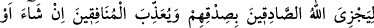
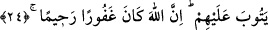

Gâfiller ölümden mühlet istediler,
Âşıklar ise: “Hayır, hayır, acele olsun!” dediler.
Mesnevî’de der ki:
Ölüm tanesi bana tatlı olmuştur,
“Aksine onlar diridirler” peşimden gelmiştir.
Doğruluk, can vermektir. Kendinize gelin de bu konuda ileri geçin.
“Allâh’a verdikleri sözde sâdık erler vardır” âyetini okuyun.
Nice şehid olmuş güvenilir kişiler vardır ki,
Dünyâda ölmüşlerdir ama diri gibi yürürler.
“Onlar hiçbir şekilde” ne asıl olarak ne de vasıf olarak “(sözlerini)
değiştirmemişlerdir.” Bilakis sözlerinde sâbit olup son derece arzulu olarak en güzel
şekilde sözlerinin gereğini yerine getirmişlerdir. Sözünü/adağını yerine getirenlerin
durumu bellidir. Geri kalanlara gelince onların beklemekte olmaları, durumlarına en
sâdık şâhiddir.
Rivâyete göre Talha (r.a.) Uhud’da Rasûlullah (s.a.)’i korumak üzere O’nun yanında
kaldı. Eline ok isâbet etti ve yirmi dört yerinden yara aldı. Hz. Peygamber (s.a.): “Talha
cenneti kendisine vacip kıldı.”[193] buyurdu. Hz. Peygamber (a.s.) o gün onu “Talhatü’l-
hayr (Hayırlı Talha)”, Huneyn’de “Talhatü’l-cûd (Cömert Talha)”, Zâtü’l Uşeyre
gazvesinde “Talhatü’l-feyyâz (Çok feyizli, bereketli Talha) isimlerini verdi. Talha (r.a.)
Cemel vakasında şehîd düştü.
Âyette münafıklara ve kalbinde hastalık olanlara târiz vardır. Çünkü onlar sözlerini
bozarlar ve anlaşmalarını da değiştirirler.
Vah ki ömrü ve malı dosta fedâ etmedim,
Demek ki bizim aşkımız bir işe yaramaz.
24. Çünkü Allah sadâkat gösterenleri sadâkatları sebebiyle mükâfatlandıracak,
münafıklara -dilerse- azap edecek yahut da (tevbe ederlerse) tevbelerini kabul
edecektir. Şüphesiz Allah, bağışlayandır, esirgeyendir.
“Çünkü Allah sadâkat gösterenleri sadâkatları sebebiyle mükâfatlandıracak” Yâni
bu olanların hepsi, Allâh’ın sâdıkları onlardan meydana gelen söz ve fiil olarak